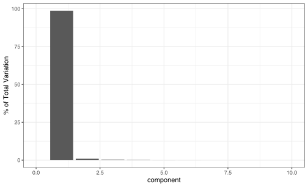

We’re very chuffed to announce the release of recipes 0.1.13. recipes is an alternative method for creating and preprocessing design matrices that can be used for modeling or visualization.
You can install it from CRAN with:
install.packages("recipes")
You can see a full list of changes in the release notes. There are some improvements and changes to talk about.
General changes
First, step_filter(), step_slice(), step_sample(), and step_naomit() had their defaults for skip changed to TRUE. In the vast majority of applications, these steps should not be applied to the test or assessment sets.
Also, step_upsample() and step_downsample() are soft deprecated in recipes as they are now available in the
themis package. They will be removed in the next version.
Finally, for the new version of dplyr, the selectors all_of() and any_of() can now be used in step selections.
Feature extraction improvements
In the
feature extraction category, there are two improvements. First, the tidy() method for step_pca() can return the percentage of variation accounted for by each
PCA component. For example:
library(tidymodels)
# Many highly correlated numeric predictors:
data(meats, package = "modeldata")
set.seed(2383)
split <- initial_split(meats)
meat_tr <- training(split)
meat_te <- testing(split)
pca_rec <-
recipe(water + fat + protein ~ ., data = meat_tr) %>%
step_normalize(all_predictors()) %>%
step_pca(all_predictors(), num_comp = 10, id = "pca") %>%
prep()
var_info <- tidy(pca_rec, id = "pca", type = "variance")
table(var_info$terms)
##
## cumulative percent variance cumulative variance
## 100 100
## percent variance variance
## 100 100
var_info %>%
dplyr::filter(terms == "percent variance") %>%
ggplot(aes(x = component, y = value)) +
geom_bar(stat = "identity") +
xlim(c(0, 10)) +
ylab("% of Total Variation")

Another change in this version of recipes is that step_pls() has received an upgrade.
Partial least squares (PLS) is similar to PCA but takes the outcome(s) into account.
Previously, it used the pls package to do the computations. That’s a great package but it lacks two important features: allow for a categorical outcome value (e.g. “pls-da” for discriminant analysis) or allow for sparsity in the coefficients. Sparsity would facilitate simpler and perhaps more robust models.
step_pls() now uses the Bioconductor
mixOmics package. As such, the outcome data can now be a factor and a new argument predictor_prop is used for sparsity. That argument specifies the maximum proportion of partial least squares loadings that will be non-zero (per component) during training. Newly prepped recipes will use this package but previously created recipes still use the pls package.
For our previous example, let’s look at the protein outcome and build a recipe:
pls_rec <-
recipe(water + fat + protein ~ ., data = meat_tr) %>%
step_normalize(all_predictors()) %>%
step_pls(
all_predictors(),
outcome = vars(protein),
num_comp = 3,
predictor_prop = 0.75,
id = "pls"
) %>%
prep()
# for new data:
bake(pls_rec, meat_te, protein, starts_with("PLS")) %>%
tidyr::pivot_longer(cols = c(-protein),
names_to = "component",
values_to = "values") %>%
ggplot(aes(x = values, y = protein)) +
geom_point(alpha = 0.5) +
facet_wrap(~ component, scale = "free_x") +
xlab("PLS Score")

What are the PLS coefficients from this?
tidy(pls_rec, id = "pls") %>%
ggplot(aes(x = component, y = terms, fill = value)) +
geom_tile() +
scale_fill_gradient2(
low = "#B2182B",
mid = "white",
high = "#2166AC",
limits = c(-0.4, 0.4)
) +
theme(axis.text.y = element_blank()) +
ylab("Predictors")
The third component has the largest coefficients and the largest effect on predicting the percentage of protein. This is consistent with the scatter plot above. The blocks of white in the heatmap above are coefficients effected by the sparsity argument.